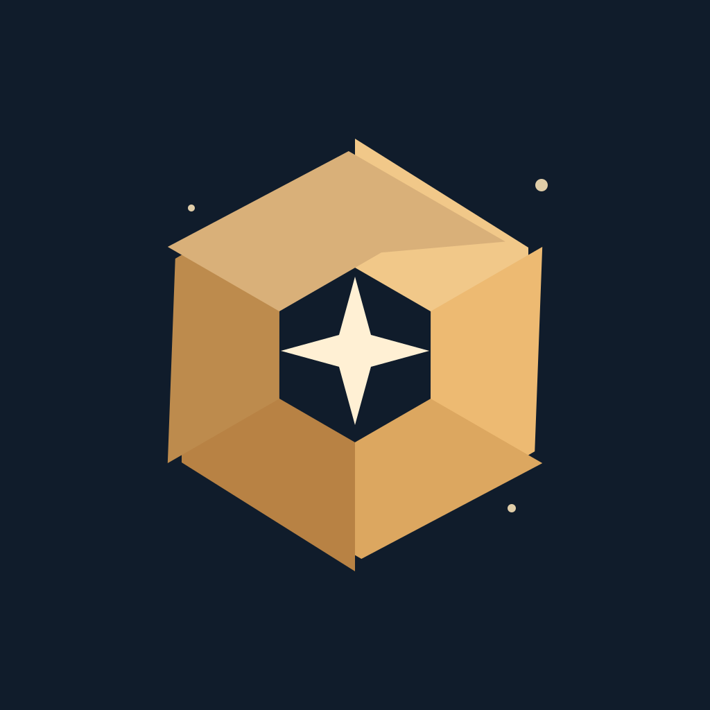

Scope Session
An astrophotography session log for iPhone. Keep targets, setups and exposures together, night after night.
In development for iPhone.
Explore Scope Session ↗Independent software · iPhone
Useful tools for the moments that make up your day. Made with care, by Kal.
Get in touch ↗From Made by Kal

An astrophotography session log for iPhone. Keep targets, setups and exposures together, night after night.
In development for iPhone.
Explore Scope Session ↗The approach
Start with an everyday need. Give it the attention it deserves.
Make the small things feel considered, from the first screen to the last tap.
Questions and feedback go directly to the person making the apps.